In this section, we demonstrate Green’s function method of solving differential equations.
The cable equation is written as [Gerstner2002]
(1)
or
(2)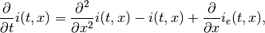
where 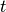,  , , 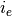 are all renormalized unit less quantities. For the meaning and definition of them, ref. page 55 of Gerster 2002 [Gerstner2002].
, , 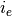 are all renormalized unit less quantities. For the meaning and definition of them, ref. page 55 of Gerster 2002 [Gerstner2002].
Equation (1) can be solved for stationary case, which is
(3)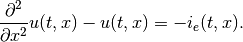
While many methods can be used to solve second order nonhonogenerous differential equations, Green’s function is the most general and useful one.
Definition of Green’s Function
The idea of Green’s function is very simple. TO solve a general solution of equation
(4)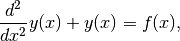
where 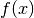 is the source and some given boundary conditions. To save ink we define
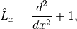
which takes a function 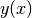 to , i.e.,
(5)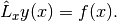
Now we define the Green’s function to be the solution of equation (5) but replacing the source with delta function 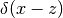
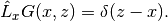
Why do we define this function? The solution to equation (4) is given by
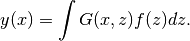
To verify this conclusion we plug it into the LHS of equation (4)
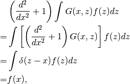
in which we used one of the properties of Dirac delta distribution
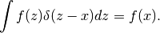
Also note that delta function is even, i.e., 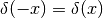.
So all we need to do to find the solution to a standard second differential equation
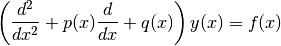
is do the following.
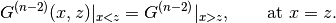
Discontinuity of the first order derivative at , i.e.,
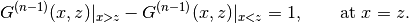
This condition comes from the fact that the integral of Dirac delta distribution is Heaviside step function.
Solve the coefficients to get the GF.
The solution to an inhomogeneous ODE 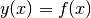 is given immediately by
If we haven’t done step 2 we know would have some unkown coefficients which can be determined by the BC.
How to Find Green’s Function
So we are bound to find Green’s function. Solving a nonhonogeneous equation with delta as source is as easy as solving homogeneous equations.
We do this by demonstrating an example differential equation. The problem we are going to solve is
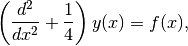
with boundary condition
(6)
For simplicity we define
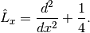
First of all we find the GF associated with
We just follow the steps.
The general solution to
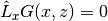
is given by
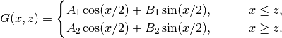
Continuity at for the 0th order derivatives,
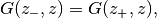
which is exactly
(7)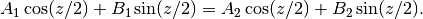
Discontinuity condition at 1st order derivatives,
which is
(8)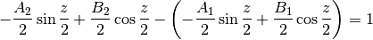
Now we combine (7) and (8) to eliminate two degrees of freedom. For example, we can solve out 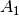 and 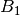 as a function of all other coefficients. Here we have
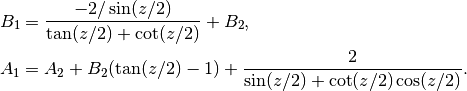
Write down the form solution using 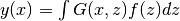. Then we still have two unknown free coefficients 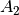 and 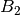, which in fact is to be determined by the BC equation (6).
The stationary equation (3) can be written as
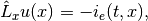
where 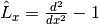. The boundary condition is the vanishing wave at infinity 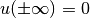. As we are talking about stationary equation, the source should be time-independent, thus we take only a one dimension Dirac distribution 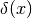 to solve for GF.
The general Green’s function is [1]
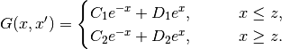
Solving Homogeneous Equation
The corresponding homogeneous equation is
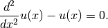
To find the general solution we assume it has the form
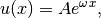
which is then plugged back into the equation,
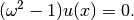
We require 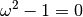 to make the solution most general, which leads to
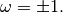
Finally we write down the general solution to this homogeneous equation,
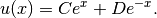
In this simple case, BC can be applied to Green’s function first [2], which means
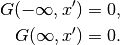
These conditions can significantly simplify the GF,
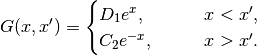
Then we use the continuity condition and discontinuity condition,
which is basically
Solving out the coefficients, we get
Then we reached the complete and final GF,
Given any general source , we can write down the solution
As a verification, we integrate out for ,
which is exactly the solution given by Mathematica and makes sense.
| [1] | In fact this is can be obtained by using the Fourier transform method. |
| [2] | Because the only possibility to make the integral satisfy is to make sure GF vanish on the boundaries. |
So far we have been dealing with math. What is the actual meaning of GF? To dive into this question we need to review the equation for GF, in this case,
On the RHS, source term is a delta function, which is just a stimulation to the system at point . The textbook shows a graph [3] for the case , where we see the stimulation is given for point and the potential drops as we deviate from the stimulated point.
In a stimulation-response system, one of the most important properties is the resonance width, or reaction width, which means the deviation required for the amplitude to drop to of the peak value. In this stationary solution, the distance is 1 in renormalized unit. To transform back to to SI unit, recall that the characteristic length is this problem is .
Just to build a picture, this length is around [4]
| [3] | Wulfram Gerstner and Werner M. Kistler, Spiking Neuron Models, (2002), Fig. 2.17. |
| [4] | Since opening of ion channesl can significantly change the transverse conductivity, this estimation can change significantly in different situations. |
To solve the most general non-homogeneous cable equation even for non-stationary case, we have to introduce a two-dimensional Dirac distribution .
Green’s function for the most general case should satisfy [Gerstner2002]
Again to save ink we define
where and .
The trick is to solve for time dependence first by Fourier transforming the equation to frequency space. To achieve that, we define
(9)
On the other hand, Dirac delta is Fourier transformed to
(10)
which infact gives one of the representations of Dirac delta distribution
Applying the transforms of (9) and (10) to the equation we have
which becomes
which is then simplified by removing the integral and common parts

Then we solve this first order differential equation.
| [Gerstner2002] | (1, 2, 3) Wulfram Gerstner and Werner M. Kistler, Spiking Neuron Models, (2002). |